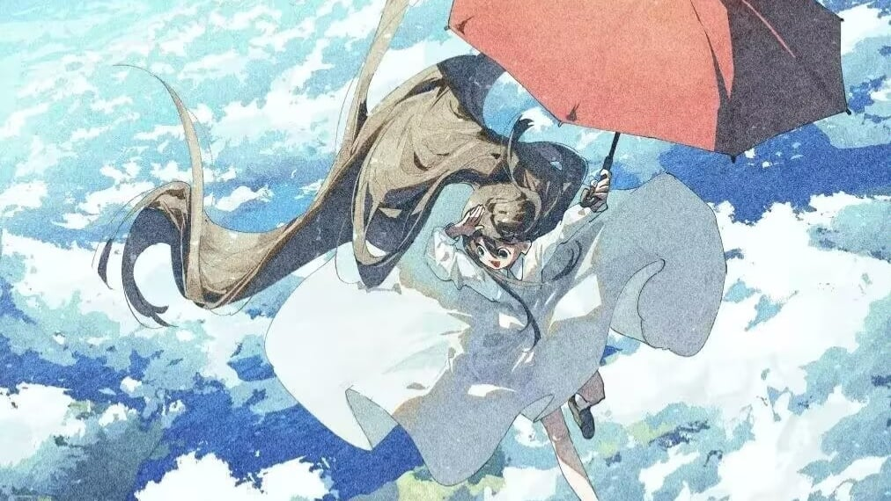
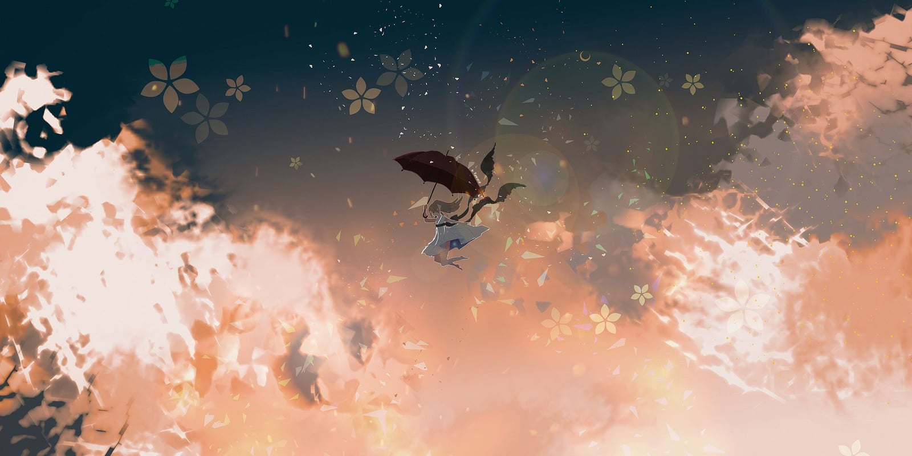
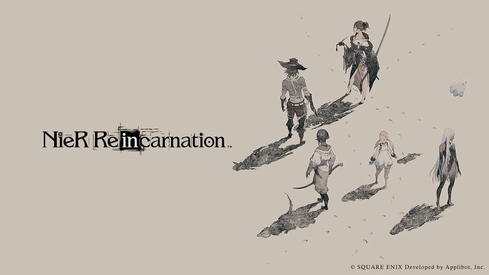
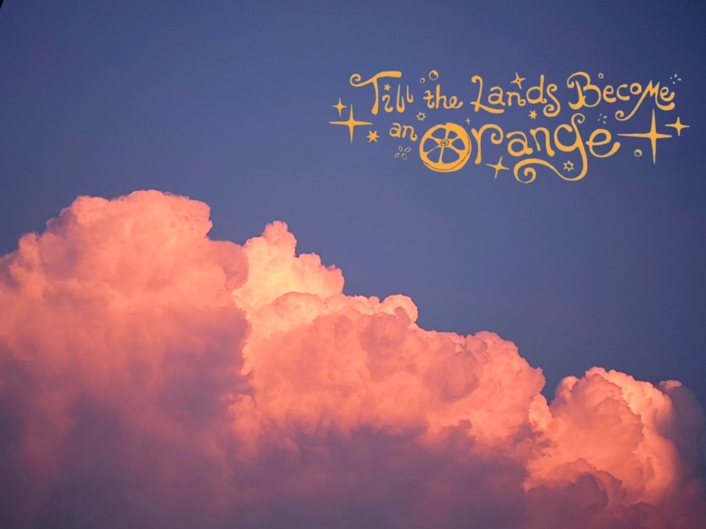

STORIES & NOTES
随笔、记录，和一些没来得及说的话
共 4 篇文章 · 按最新发布排序

随笔/2026.10.28
NieR项目，突然卡关，修！

记录/2026.10.28
NieR Re[in]carnation 重建目前已完成，可正常游玩
随笔/2026.10.27
今天（2026.10.27）突然想做NieR Re[in]carnation的重建项目，但是你告诉我，这是什么？

随笔/2026.10.24
本站第一篇文章，虽然并不知道写什么
换个关键词，或者回到全部文章看看。
已经读到这页的最后了
按 Esc 关闭。搜索会前往文章列表。
当前浏览器未启用 JavaScript。文章、小诗和导航仍可阅读；搜索、主题切换和留言演示需要启用 JavaScript。